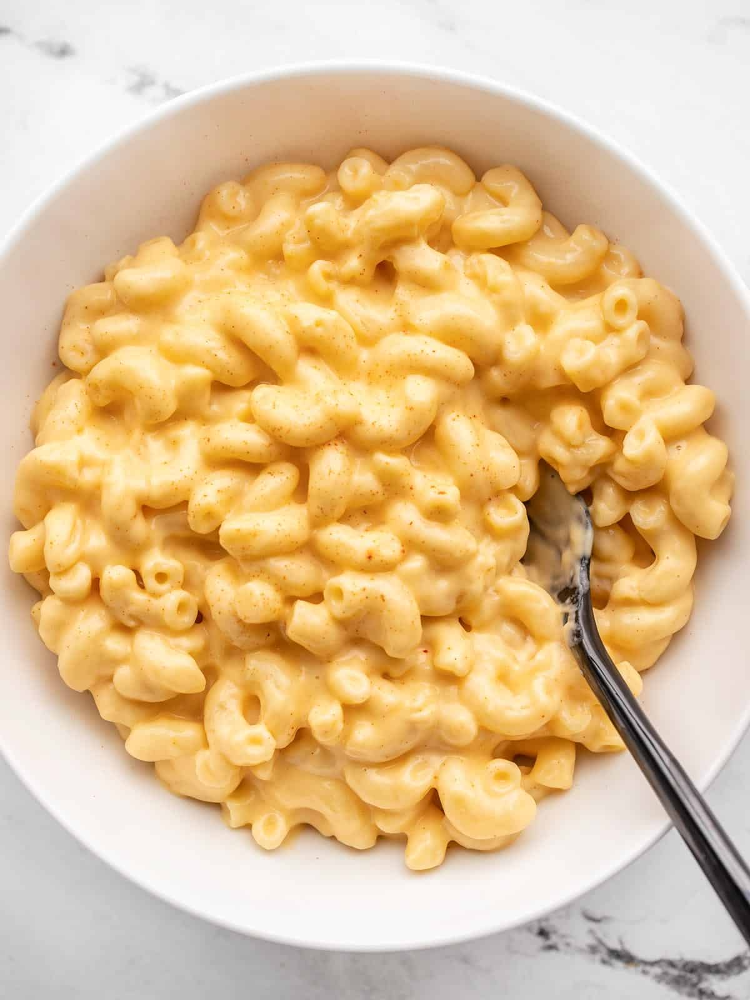

(Back)
Extra Cheesy Homemade Mac and Cheese
I have several flavored macaroni and cheese recipes on Budget Bytes already, but I realized I didn’t have one single plain, classic homemade mac and cheese recipe.
Like, nothing fancy or unique, just straight up creamy, comforting, cheesy goodness! So that’s what I have for you today.
It’s a classic stovetop macaroni and cheese recipe made with a classic roux-based cheese sauce that will satisfy all of your cheesy pasta cravings.
It’s amazingly delicious on its own, but I’ve also included a list of fun add-ins and other ways you can customize your mac and cheese and make it unique.

Homemade Mac and Cheese
This incredibly creamy and cheesy homemade mac and cheese is great on its own or as a jumping off point for your own creation.
Ingredients
- 8 oz. macaroni
- 3 Tbsp butter
- 3 Tbsp all-purpose flour
- 1/2 tsp onion powder
- 2 cups whole milk
- 1/2 tsp hot sauce*
- 1/2 tsp salt
- 8 oz. block sharp cheddar, shredded
Instructions
- Cook the macaroni according to the package directions (boil for 7-8 minutes, or until tender). Drain the macaroni in a colander.
- Place the butter, flour, and onion powder in a medium pot. Whisk and heat over medium until the butter is melted and the mixture begins to bubble. Once bubbling, continue to whisk and cook for one minute.
- After cooking the butter and flour roux, whisk in the milk. Continue to cook and whisk over medium heat until the milk begins to gently simmer, at which point it will thicken to the consistency of heavy cream or gravy.
- Turn the burner off. Season the white sauce with the salt and hot sauce.
- Begin to add the shredded cheddar, one handful at a time, whisking it in until completely melted before adding more. Continue until all of the cheese has been melted into the sauce. If the sauce becomes too cold to melt the cheese, place it back over low heat only briefly to continue melting the cheese. Overheating the sauce can cause it to break and become grainy.
- Add the cooked and drained pasta to the pot with the cheese sauce and stir to combine. Serve the mac and cheese hot and enjoy!
Notes
*This amount of hot sauce does not make the macaroni and cheese spicy. It just brightens the flavor a bit. You can also accomplish this with Dijon mustard (same amount).